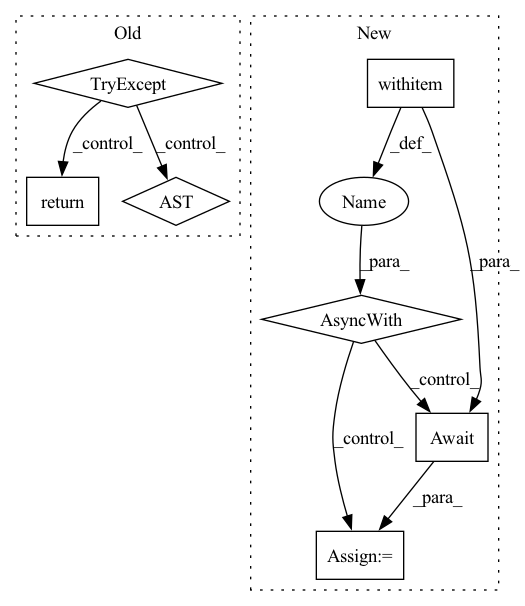

Pattern ID :16879

Before Change
_kind = "pea"
def _add(self):
try:
self._logger.debug(
f"sending POST request to mini-jinad on {self.host}/{self._kind}"
)
r = requests.post(url=f"{self.host}/{self._kind}", json=self.params)
if r.status_code != requests.codes.created:
raise Runtime400Exception(
f"{self._kind.title()} creation failed: {r.json()}"
)
return r.json()
except requests.exceptions.RequestException as ex:
self._logger.error(f"{ex!r}")
raise Runtime400Exception(
f"{self._kind.title()} deletion failed. request timed out"
After Change
:return: response from mini-jinad
self._logger.debug(f"sending POST request to mini-jinad on {uri}/{self._kind}")
async with aiohttp.request(
method="POST", url=f"{uri}/{self._kind}", json=params
) as response:
response_json = await response.json()
if response.status != HTTPStatus.CREATED:
raise Runtime400Exception(
f"{self._kind.title()} creation failed: {response_json}"
In pattern: SUPERPATTERN
Frequency: 3
Non-data size: 7
Instances
Fragment ID: 56772582
Project Name: jina-ai/jina
Commit Name: 5082c49ebcf70b070f96682b7e1766c17822253b
Time: 2021-07-15
Author: deepankar.mahapatro@jina.ai
File Name: daemon/stores/peas.py
M Class Name: PeaStore
N Class Name: PeaStore
M Method Name: _add(3)
N Method Name: _add(1)
M Parent Class: ContainerStore
N Parent Class: ContainerStore
M File Name: daemon/stores/peas.py
N File Name: daemon/stores/peas.py
M Start Line: 12
M End Line: 29
N Start Line: 17
N End Line: 37
'>
Before Change
if width and height:
return {"height": height, "width": width}
try:
return await get_metadata(filepath, is_video)
except:
return _default_metadata(is_video)
After Change
"frame_rate": info.frame_rate,
}
async with aiofiles.open(filepath, "rb") as f:
width, height = await get_image_dimensions(f)
return {"width": width, "height": height}
'>
Fragment ID: 56772583
Project Name: voxel51/fiftyone
Commit Name: 2e056e4882a943e10e8ea0206698041448958115
Time: 2021-11-15
Author: brimoor@umich.edu
File Name: fiftyone/server/metadata.py
M Class Name: AnonimousClass
N Class Name: AnonimousClass
M Method Name: read_metadata(2)
N Method Name: read_metadata(3)
M Parent Class:
N Parent Class:
M File Name: fiftyone/server/metadata.py
N File Name: fiftyone/server/metadata.py
M Start Line: 28
M End Line: 65
N Start Line: 80
N End Line: 92
'>
Before Change
:param port_expose: port expose for container flow
:param kwargs: keyword args
:return: response from mini-jinad
try:
r = requests.post(
url=f"{self.host}/{self._kind}",
params={"port_expose": port_expose},
json=self.params,
)
if r.status_code != requests.codes.created:
raise Runtime400Exception(
f"{self._kind.title()} creation failed \n{"".join(r.json()["body"])}"
)
return r.json()
except requests.exceptions.RequestException as ex:
self._logger.error(f"{ex!r}")
raise Runtime400Exception(
f"{self._kind.title()} creation failed: {r.json()}"
After Change
:return: response from mini-jinad
self._logger.debug(f"sending POST request to mini-jinad on {uri}/{self._kind}")
async with aiohttp.request(
method="POST",
url=f"{uri}/{self._kind}",
params={"port_expose": str(port_expose)},
json=params,
) as response:
response_json = await response.json()
if response.status != HTTPStatus.CREATED:
raise Runtime400Exception(
f"{self._kind.title()} creation failed: {response_json}"
'>
Fragment ID: 56772581
Project Name: jina-ai/jina
Commit Name: 5082c49ebcf70b070f96682b7e1766c17822253b
Time: 2021-07-15
Author: deepankar.mahapatro@jina.ai
File Name: daemon/stores/flows.py
M Class Name: FlowStore
N Class Name: FlowStore
M Method Name: _add(4)
N Method Name: _add(2)
M Parent Class: ContainerStore
N Parent Class: ContainerStore
M File Name: daemon/stores/flows.py
N File Name: daemon/stores/flows.py
M Start Line: 24
M End Line: 41
N Start Line: 17
N End Line: 40